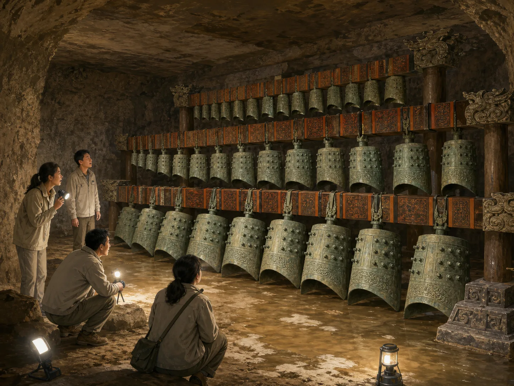
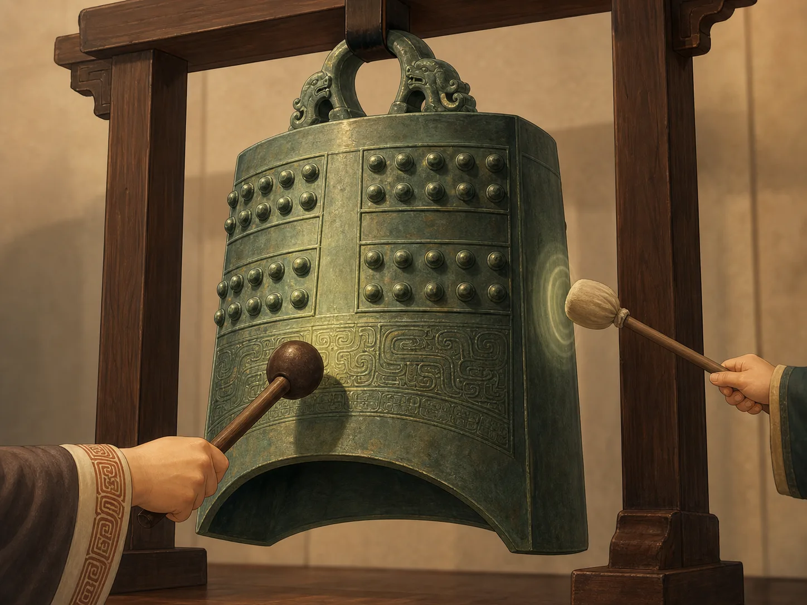
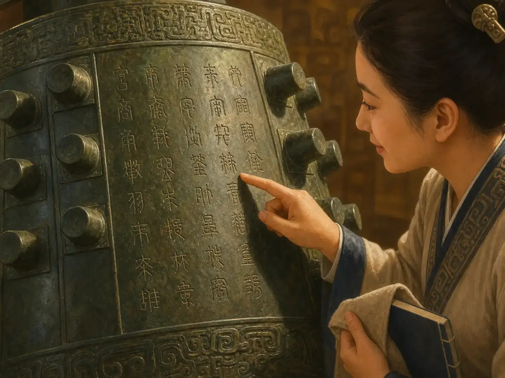

能演奏音乐的古老青铜钟：编钟
Ancient Bronze Bells That Could Play Music
Page 1
墓里不是一堆旧东西，而是一整支乐队
Inside the Tomb Was a Whole Orchestra

When archaeologists opened the ancient tomb, they did not find a few loose instruments. They found a whole set of bronze bells hanging in order.
一九七七年，湖北随州一座古墓被发现了。考古学家把水慢慢抽走以后，看见墓里露出了一排排大钟。
那些钟不是随便堆在地上的。它们挂在木架上，排得整整齐齐，像一支安安静静等着演奏的乐队。
墓主人是两千多年前的一位国君，叫曾侯乙。他把这么大一套乐器放进墓里，好像想把音乐也一起带走。
In 1977, people discovered an ancient tomb in Suizhou, Hubei. After the water inside was slowly pumped away, archaeologists saw rows of large bells appear.
The bells were not tossed on the ground. They hung neatly on wooden frames, like an orchestra waiting quietly for the music to begin.
The tomb belonged to a ruler from more than 2,000 years ago, Marquis Yi of Zeng. It was almost as if he wanted to take music with him.
Page 2
这些钟最厉害的地方，是一口钟能敲出两个音
The Amazing Part Is That One Bell Can Make Two Notes

These bells are not fully round. Because they are flatter, striking the front and the side can make different notes.
很多孩子一看到编钟，都会先想：钟不就是“当”地响一下吗？
可编钟特别的地方就在这里。它不是圆圆的钟，而是有点扁。这样一来，声音更清楚，也更适合连着演奏旋律。
更神奇的是，一口钟常常能敲出两个不同的音。敲前面是一个音，敲旁边又是另一个音。所以几十口钟合在一起，就能演出很丰富的音乐。
When many children first see these bells, they think, "Doesn't a bell just go ding once?"
But these bells are special. They are not fully round. They are a little flatter, which helps the sound stay clear and makes melodies easier to hear.
Even more surprising, one bell can often make two different notes. Strike the front, and you hear one note. Strike the side, and you hear another. That is why a whole set of bells can make such rich music.
Page 3
钟上还刻着字，像把音乐秘密写在青铜上
The Bells Also Carry Their Music Secrets in Writing

Some of the bells have many carved characters that tell people what notes the bell should make.
编钟上不只有花纹，还有很多刻出来的字。这些字不是装饰，而是在告诉人们：这口钟能发什么音，那口钟又该放在哪里。
这说明古代工匠做钟时，不只是会铸铜，也很懂声音。他们没有今天的机器，却能把大小、形状和音高做得很准。
所以编钟不只是乐器，也像一堂藏在青铜里的科学课。
The bells do not carry only patterns. Many of them also have carved writing. Those characters are not just decoration. They tell people what notes each bell should make and how the set fits together.
That shows us something important. The ancient makers did not only know how to cast bronze. They also understood sound very well. They had no modern machines, yet they could shape the bells with great care.
So these bells are not only instruments. They are also a science lesson hidden inside bronze.
Page 4
最让人吃惊的是，两千多年前的声音今天还能再听见
The Most Surprising Part Is That We Can Still Hear Them Today
编钟出土以后，被送进了博物馆。后来人们真的又把它们敲响了。
想一想，这很神奇。两千多年前有人听过的声音，今天的孩子居然还能再听见。
所以编钟最动人的地方，不只是它很大、很多、很重，而是它让古代的音乐一直活到了今天。
After the bells were brought out of the tomb, they were taken to a museum. Later, people really played them again.
That is the wonderful part. A sound heard more than 2,000 years ago can still be heard by children today.
So the most moving thing about these bells is not only that they are big, heavy, and grand. It is that they carried ancient music all the way into the present.
小结
In Summary
编钟是一整套能演奏音乐的青铜钟。它们挂在架子上，一口钟还能发出两个音。
所以它们不只是古墓里的宝物，也是古代工匠、音乐家和做钟的人一起留下来的聪明作品。
These bronze bells are a whole musical set. They hang on frames, and one bell can even make two notes.
So they are not only treasures from an ancient tomb. They are also a smart and beautiful work left by ancient makers and musicians together.